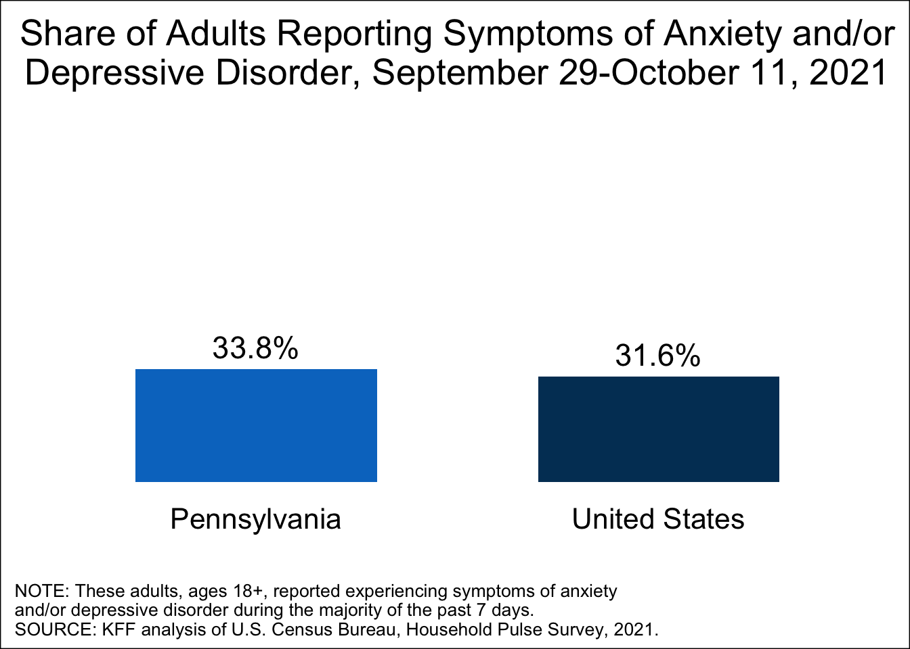
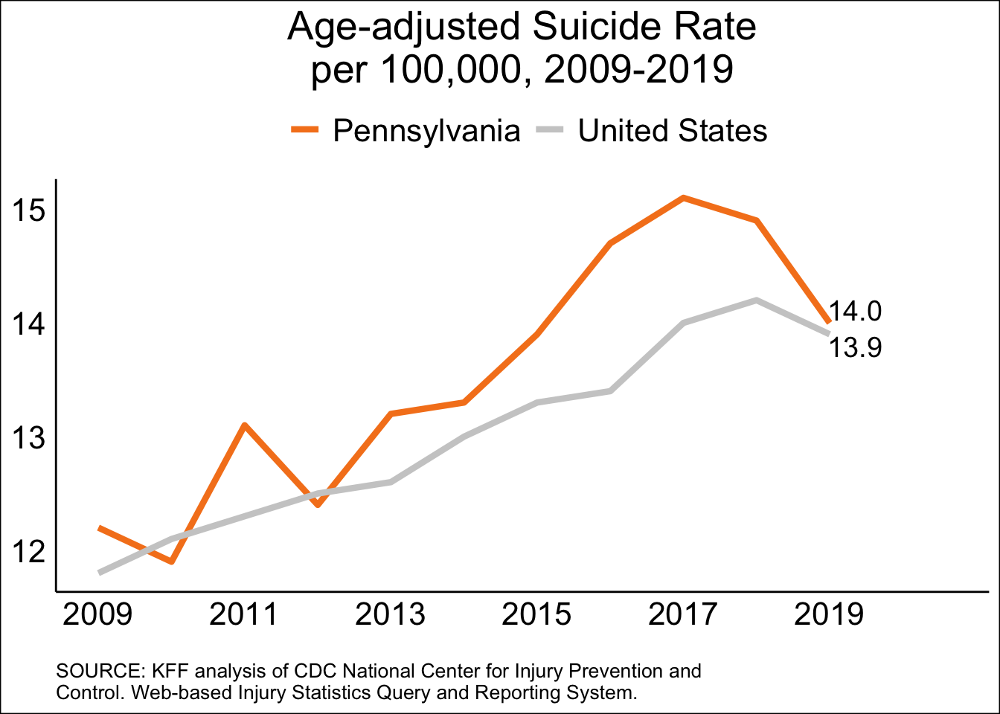
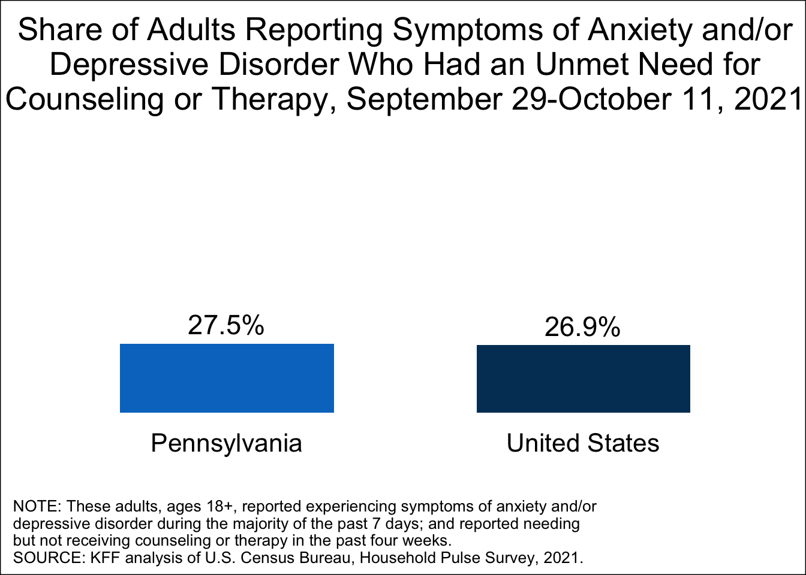
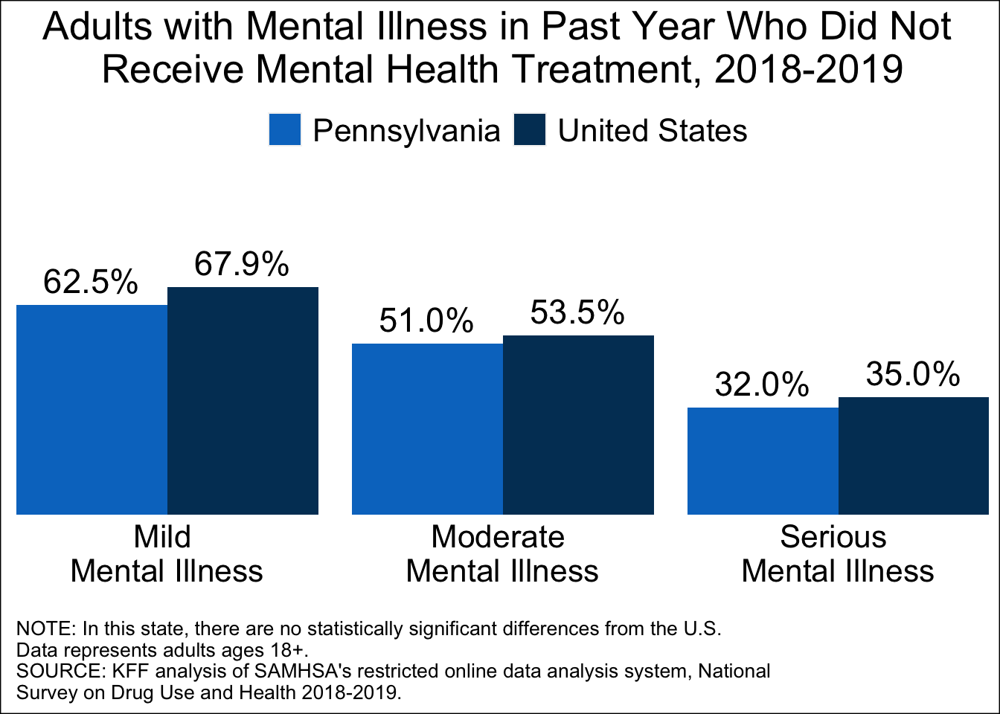
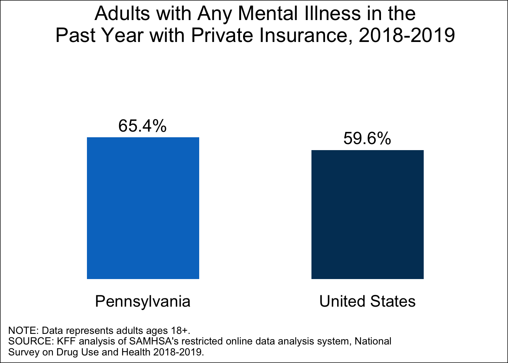
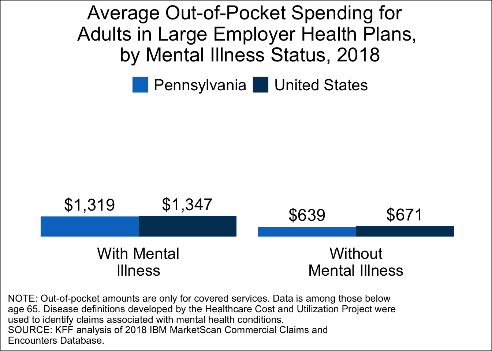
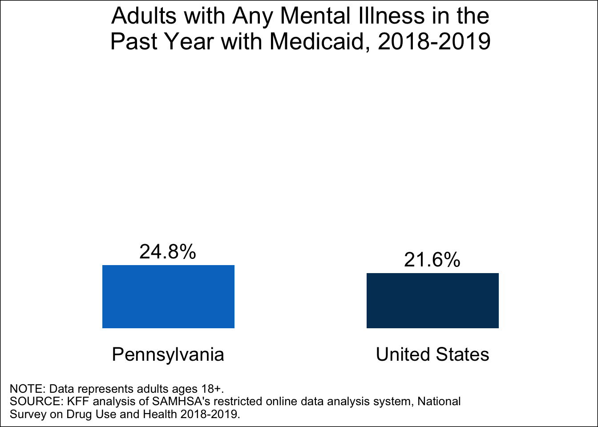

Mental Health in Pennsylvania
This fact sheet provides an overview of mental health and substance use disorders in Pennsylvania, including mental illness during the COVID-19 pandemic, the prevalence of common mental health and substance use disorders prior to the pandemic, and coverage and access issues. For comparison, national level data are also included whenever possible.
Mental Illness Prevalence
Mental illnesses can be acute or chronic and are diagnosable conditions that affect an individual’s emotional, psychological, and social well-being, and often their behavior. These conditions include depression, anxiety, schizophrenia, and mood or personality disorders, among others.
In light of the COVID-19 pandemic, mental health conditions have been exacerbated. More than three in ten adults in the U.S. have reported symptoms of anxiety and/or depressive disorder since May 2020. In comparison, in 2019, approximately one in ten adults reported symptoms of anxiety and/or depressive disorder.
As shown in the figure below, from September 29 to October 11, 2021, 33.8% of adults in Pennsylvania reported symptoms of anxiety and/or depressive disorder, compared to 31.6% of adults in the U.S.

Many individuals reported having a mental illness even before the pandemic. The share of adults in Pennsylvania with any mental illness was 19.7% in 2018-2019, which was similar to the U.S. share (19.9%).
As shown in the figure below, prior to the pandemic, 12.9% of adolescents and 7.7% of adults in Pennsylvania reported having a major depressive episode in the past year, which was similar to the U.S. shares (15.1% and 7.5%, respectively).

Suicide
Suicide is one of the leading causes of death in the U.S. and has increased in almost every state over time, making it a serious public health concern. Suicidal ideation has also been a concern throughout the pandemic. In September 2020, 11.9% of U.S adults reported serious thoughts of suicide in the past month. However, data found that suicide deaths in the U.S. decreased by 5.6% from 2019 to 2020.
While suicide is often linked to underlying mental health conditions, that is not always the case, as a combination of factors generally contribute to an individual having thoughts of suicide or attempting suicide. Risk factors can include isolation, relationship struggles, financial or housing insecurity, or problems with physical health.
- As shown in the figure below, Pennsylvania’s age-adjusted suicide rate was higher than the national level in 2019.

In 2018-2019, 4.8% of adults in Pennsylvania had serious thoughts of suicide in the past year, which was similar to the U.S. share (4.6%).
In 2019, suicide was the second leading cause of death among adolescents (ages 12-17) across the U.S.
In the U.S., the share of high school students who seriously considered attempting suicide was 18.8% in 2019.
Mental Health Workforce
Mental health professionals include psychiatrists, psychologists, psychiatric nurses, addiction counselors, and mental health or family and marriage counselors. Many people in need of mental health care or substance use treatment are unable to access it in a timely manner due to provider shortages, particularly in rural areas. There is concern that these provider shortages may be more pronounced due to increased demand during the pandemic. However, the recent shift toward telemedicine for mental health services may alleviate some issues with accessing providers.
Health Professional Shortage Area (HPSA) designations are used to identify areas that are experiencing a shortage of health professionals. Mental health HPSA designations are primarily based on the number of psychiatrists relative to the population.
As shown in the table below, the percent of need for mental health professionals met in Pennsylvania is 40.9%, compared to the national percent of need met (28.1%).
Percent of
Need MetPractitioners Needed to
Remove HPSA DesignationPennsylvania
40.9%
99
United States
28.1%
6,559
SOURCE: Bureau of Health Workforce, Health Resources and Services Administration, Designated Health Professional Shortage Areas Statistics: Designated HPSA Quarterly Summary, as of September 30, 2021.
NOTE: Percent of need met is defined as the ratio of available psychiatrists to the number needed to eliminate the HPSA designation. Calculations are based on the number of psychiatrists and do not include other mental health care professionals.
Unmet Need and Barriers to Care
Unmet need refers to a person having a perceived or recommended need for mental health treatment or counseling but not receiving care. Among adults who need mental health or substance use care, some groups are more likely to face barriers to accessing care, including uninsured people, underinsured people, and communities of color. Unmet need for mental health and substance use care is expected to increase due to the pandemic, as mental health conditions have been exacerbated and barriers to accessing care may have worsened.
- As shown in the figure below, among adults in Pennsylvania who reported experiencing symptoms of anxiety and/or depressive disorder, 27.5% reported needing counseling or therapy but not receiving it in the past four weeks, compared to the U.S. average of 26.9%.

- Leading up to the pandemic, large shares of adults with mental illness did not receive care. As shown in the figure below, in Pennsylvania, 62.5% (601,000) of adults with mild mental illness, 51.0% (254,000) of adults with moderate mental illness, and 32.0% (158,000) of adults with serious mental illness in the past year did not receive mental health treatment.

Prior to the pandemic, in 2018-2019, 6.9% (681,000) of adults in Pennsylvania reported an unmet need for mental health treatment in the past year, which was similar to the U.S. share of 6.2% (15.4 million). Unmet need refers to a person having a perceived or recommended need for mental health treatment or counseling but not receiving care.
Among these adults in Pennsylvania who reported an unmet need for mental health treatment in the past year, 31.5% (212,000) did not receive care because of cost, which was lower than the U.S. share of 39.7% (6.1 million).
In 2019, 11.3% of children ages 3-17 in Pennsylvania received mental health care in the past year; compared to 11.1% of children in the U.S. Nationally, many children with mental health needs do not receive mental health care.
Private Insurance
The 2010 Affordable Care Act (ACA) requires coverage of mental health and substance use services as an “essential health benefit” under most health insurance plans offered in the individual and small group markets. This requirement does not apply to large group markets, but most large group plans do cover these benefits. The ACA built on the federal Mental Health Parity and Addiction Equity Act of 2008, which requires many group insurance plans that cover mental health and substance use services to do so as generously as medical and surgical services.
– In order to address the increase in mental health issues during the pandemic, many employers offering health insurance made changes to their mental health resources and benefits. Among firms with 50 or more employees offering health benefits, 39% made one of the following changes: increased coverage for out-of-network mental health and substance use services, waived or reduced cost-sharing, expanded the number of in-network providers, developed new resources such as employee assistance programs, and expanded ways to access services such as telemedicine.
- Leading up to the pandemic, many adults with any mental illness were enrolled in private insurance. As shown in the figure below, in Pennsylvania, 65.4% of adults with any mental illness in the past year had private insurance, compared to 59.6% of adults in the U.S.

As shown in the figure below, average out-of-pocket spending for all services for adults with mental illness enrolled in large employer health plans is higher than average out-of-pocket spending for adult enrollees without mental illness in Pennsylvania ($1,319 vs. $639, respectively) as it is in the U.S. overall ($1,347 vs. $671, respectively). This does not include payments for services that enrollees do not claim under their employer coverage. Adults with mental illness enrolled in large employer health plans have higher average total health care spending compared to enrollees without mental illness in Pennsylvania ($8,451 vs. $3,990, respectively) and in the U.S. overall ($8,876 vs. $4,066, respectively).

- Despite federal and state parity laws, even for people with insurance coverage, a lack of in-network options for mental health and substance use care may affect access to needed services. In 2017, among people with large employer coverage, 20% of in-network admissions for mental health and/or substance abuse led to out-of-network charges.
Medicaid
Medicaid plays a key role in coverage and financing of mental health care and substance use treatment for low-income Americans. Medicaid enrollees face limited out-of-pocket expenses for care and typically have access to a broad range of mental health and substance use services.
Many individuals, including Medicaid enrollees, delayed needed health care when the pandemic began. Data has found that among Medicaid enrollees, utilization rates for some health care services have now rebounded to pre-pandemic levels; however, utilization rates for mental health services have lagged.
Prior to the pandemic, as shown in the figure below, 24.8% of adults with any mental illness in Pennsylvania reported having Medicaid coverage in the past year in 2018-2019. Of the 29 mental health services in the tables below, 9 were not covered in fee-for-service Medicaid for categorically needy traditional adult beneficiaries, while 20 were covered. Medicaid managed care plans may provide a broader scope of services.

| Mental Health Service | Covered in Pennsylvania | Number of States with Service |
|---|---|---|
| Inpatient Psychiatric Hospital | Yes | 43 |
| 23-hour Observation | No | 33 |
| Psychiatric Residential Treatment | No | 23 |
| Adult Group Homes | No | 12 |
| Crisis Services | Yes | 43 |
| SOURCE: KFF State Health Facts: 2018 Medicaid Behavioral Health Services, Institutional Care and Intensive Services. | ||
| Mental Health Service | Covered in Pennsylvania | Number of States with Service |
|---|---|---|
| Case Management | No | 29 |
| Day Treatment | No | 34 |
| Partial Hospitalization | Yes | 33 |
| Psychosocial Rehabilitation | No | 29 |
| Intensive Outpatient Treatment | Yes | 34 |
| Mental Health Rehabilitation | No | 37 |
| ADL/Skills Training | No | 28 |
| Assertive Community Treatment | No | 33 |
| Psychiatric Services - Evaluation | Yes | 46 |
| Psychiatric Services - Testing | Yes | 43 |
| Psychological Testing | Yes | 46 |
| Individual Therapy | Yes | 45 |
| Group Therapy | Yes | 45 |
| Family Therapy | Yes | 46 |
| SOURCE: KFF State Health Facts: 2018 Medicaid Behavioral Health Services, Outpatient Facility Services and/or Provider Services. | ||
| Substance Use Disorder Service | Covered in Pennsylvania | Number of States with Service |
|---|---|---|
| Inpatient Detoxification | Yes | 43 |
| Residential Rehabilitation | Yes | 33 |
| Outpatient Detoxification | Yes | 31 |
| Burprenorphine for MAT | Yes | 51 |
| Oral Naltrexone for MAT | Yes | 51 |
| Injectable Naltrexone for MAT | Yes | 51 |
| Methadone for MAT | Yes | 41 |
| Suboxone Treatment | Yes | 44 |
| Intensive Outpatient Treatment for SUD | Yes | 38 |
| Smoking/Tobacco Cessation Counseling | Yes | 37 |
| SOURCE: KFF State Health Facts: 2018 Medicaid Substance Use Disorder (SUD) Services. | ||
| NOTE: MAT refers to Medication Assisted Treatment. |
Notes
Tests measuring statistical significance were at the p<0.05 level and all significant differences are noted with an asterisk.
For more information on Mental Health and Substance Use at the state-level, along with sources and/or methods, visit the KFF Mental Health & Substance Use Disorder State Data.
For information pertaining to COVID-19 and Mental Health, visit our analysis: The Implications of COVID-19 for Mental Health and Substance Use.
State fact sheets designed and created in RStudio by Kendal Orgera and Nirmita Panchal.
This work was supported in part by Well Being Trust. We value our funders. KFF maintains full editorial control over all of its policy analysis, polling, and journalism activities.